See your surrounding beauty through my lenses.
These are my second year projects, showcasing everything we've learnt along with some of my own skills.Projects
 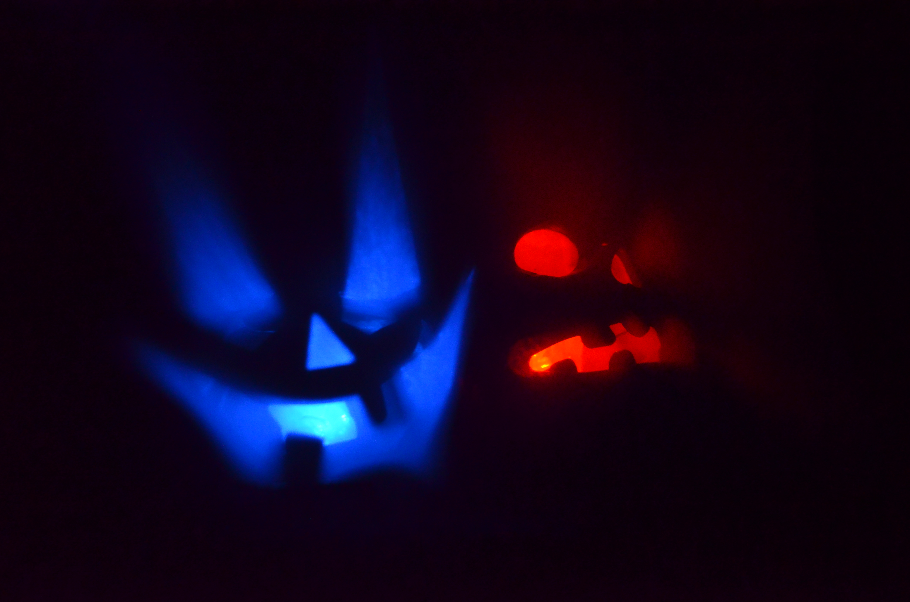
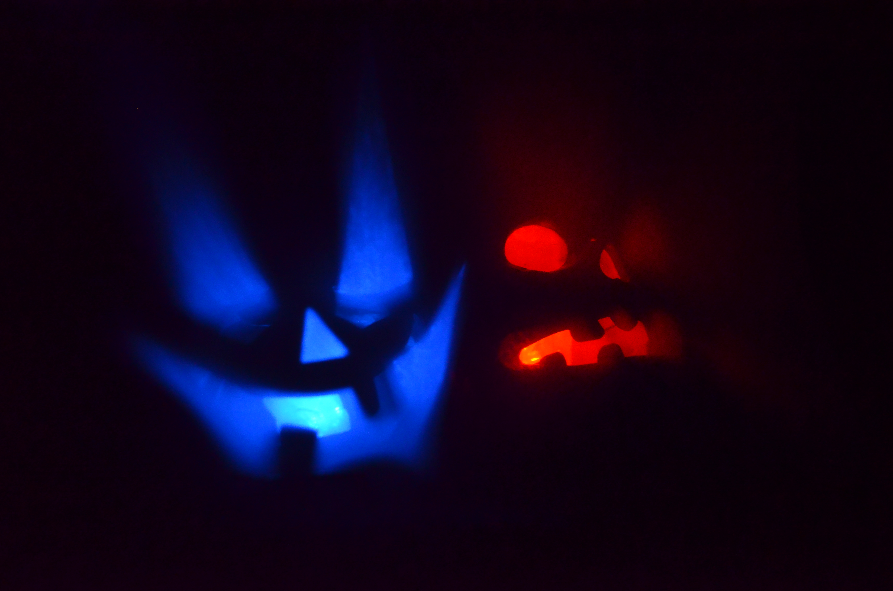
 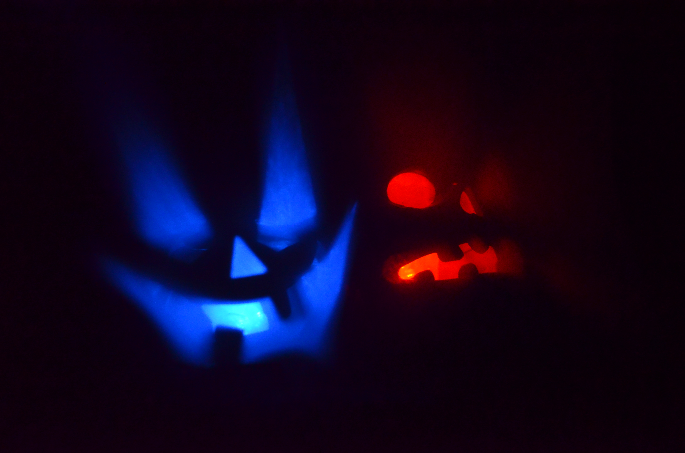
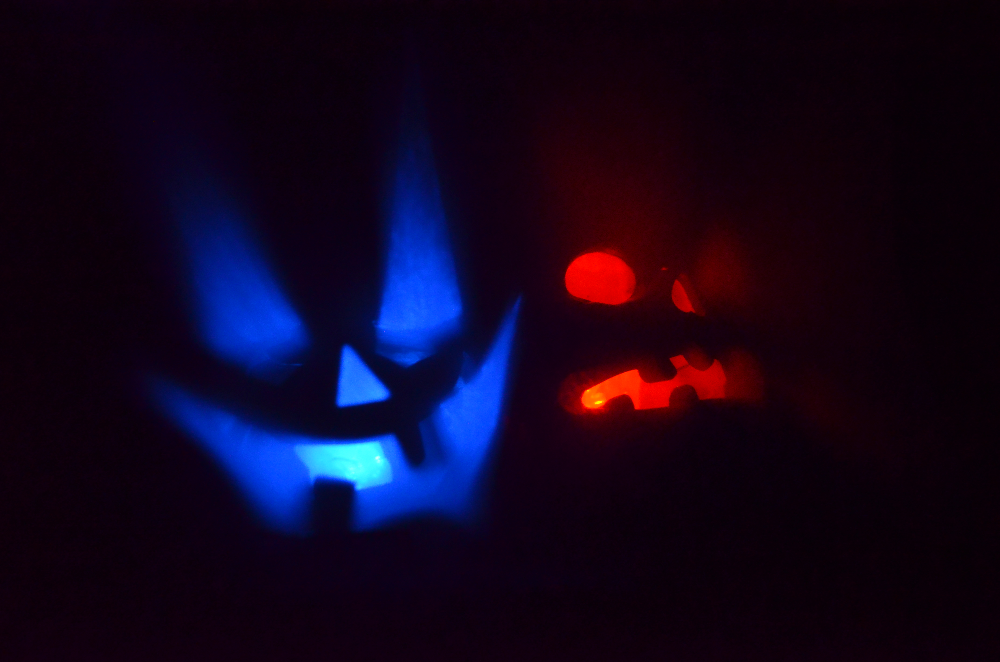
That sounds purrrrfect.
At feline sounds, our highly intuitive cats judge your music and predicts its future success.
Come with us on this musical journey where the cat judges two songs to demonstrate which song would be successful.
Then they listen to different instruments and the accepted instruments is combined to make a song.
Bring on the fear, the boogie man is near.
The right choices can bring you happiness but the wrong choices are going to cost you.
So choose wisely. This journey takes you all around the world to teach you about the creatures used in different countries to scare children into behaving.
In order to save your 3 children, you must choose the correct creature when visiting each country.
 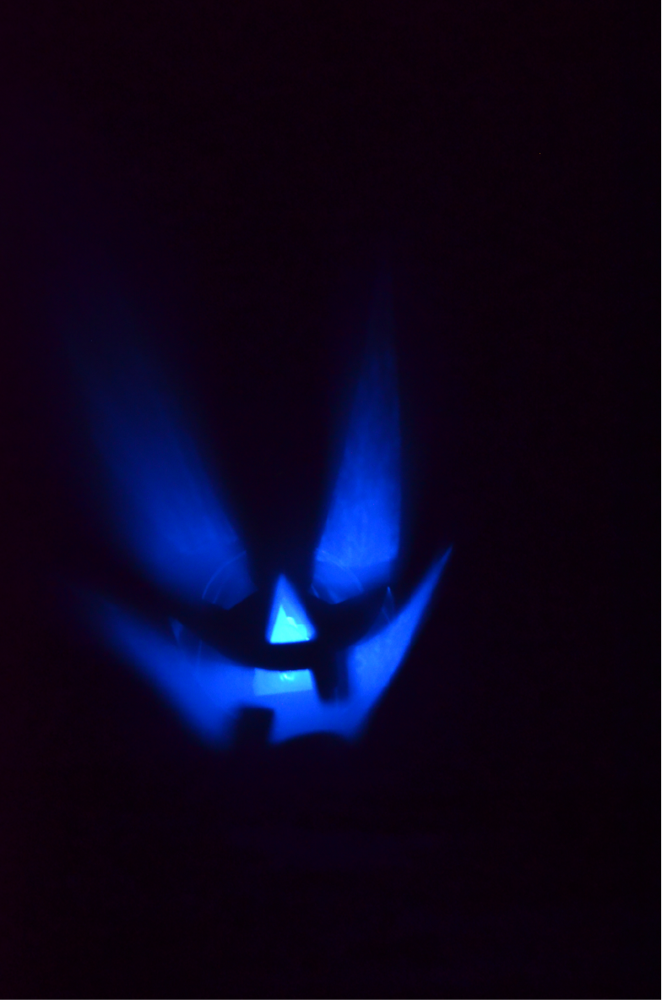
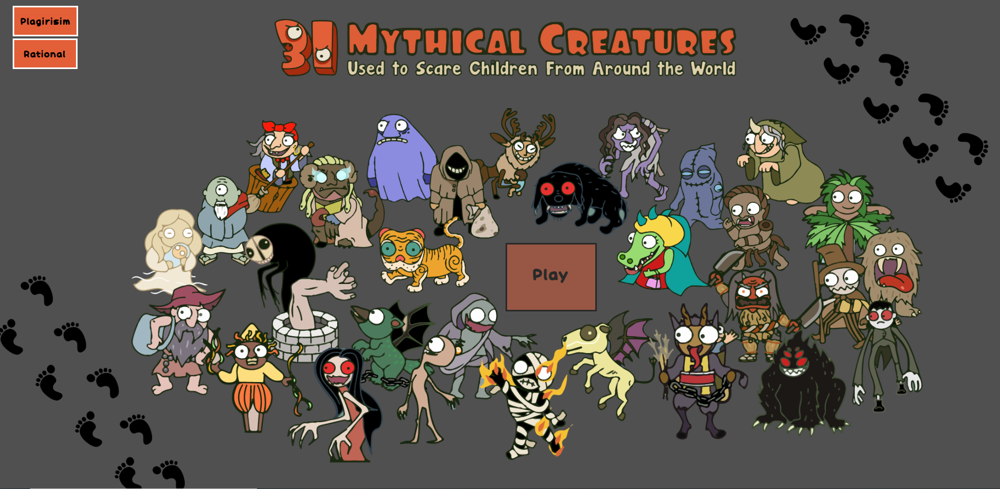
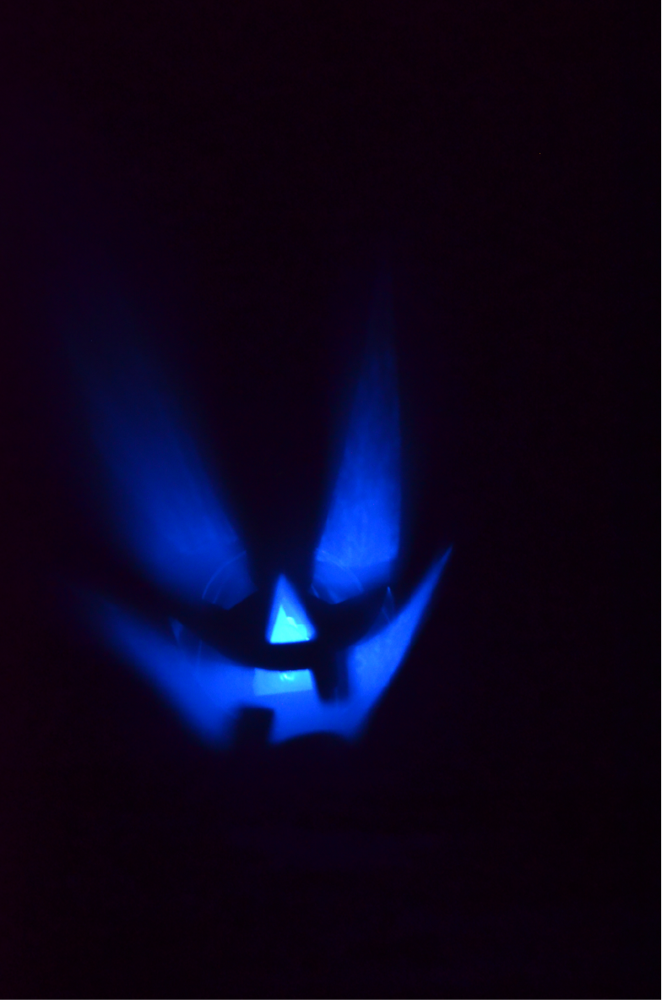
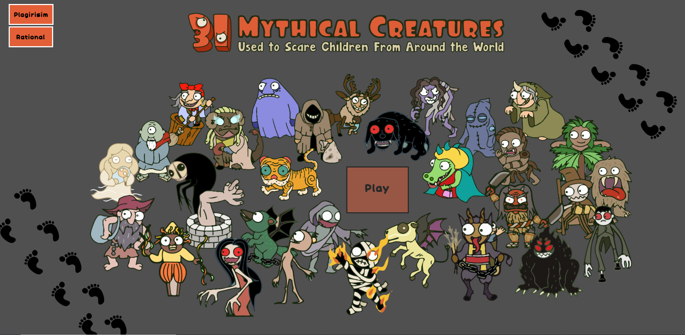
Look up, that's the only way to rise.
Through kinetic typography, we convey the emotion that is meant in the song Rise Up by Imagine dragons.
 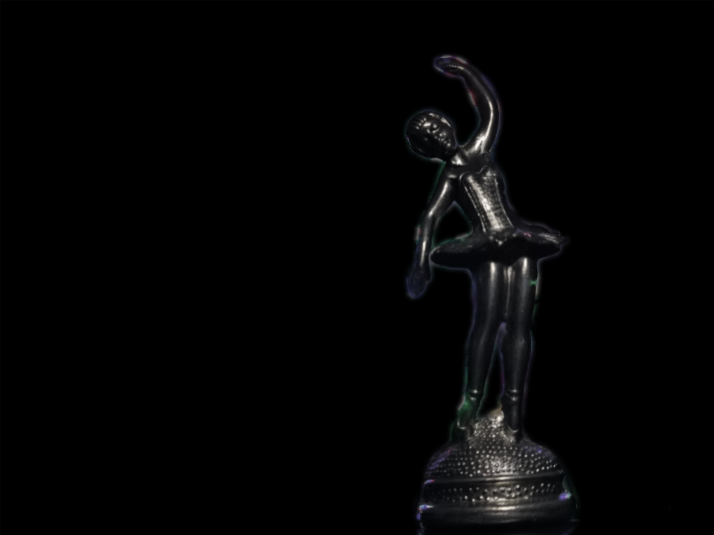
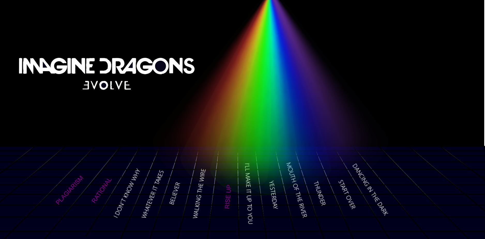
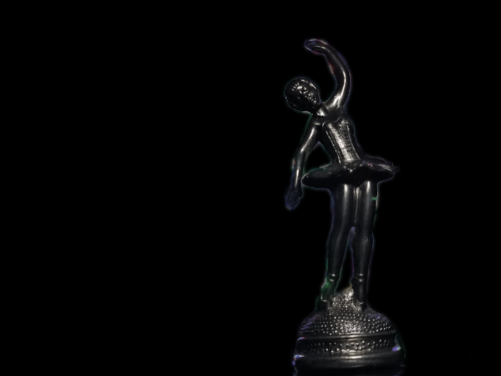
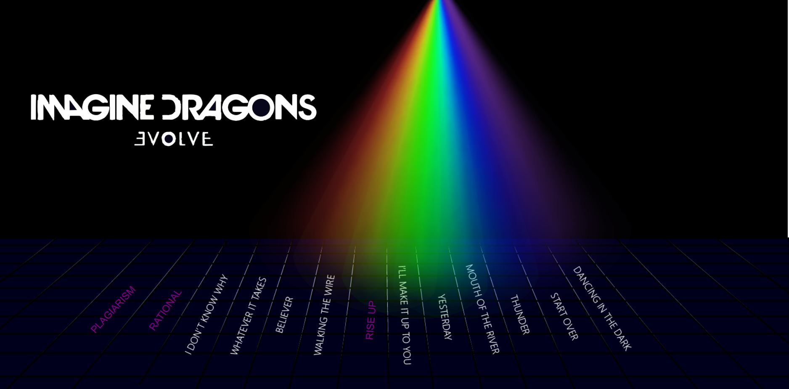
I am a Multi Media student who has developed many graphic design skills. I can create websites from scratch with all functionality and visual elements. I can create 2D games, interactive infographics and interactive logo presentations. This is my digital portfolio and I have included some of the projects that I have done. For any further information, please contact me at u17061238@tuks.co.za or at 0728696820